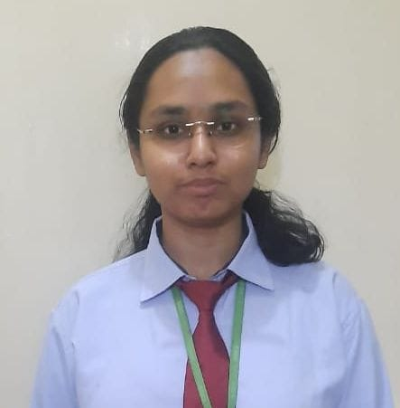

Sananda Bose

Career Objective :
To work with an organisation where I can utilize my technical competencies ,
thrust myself and help others as well to grow in parallel and reach the organisation's goal.
Internships :
Organisations
- IRCON INTERNATIONAL LTD. (PSU) under ministry of Railway
- Duration : 8 Weeks
- Technology : SCADA
- Learning : NCRTC Delhi-Meerut RRTS Elelctrification.
- Emertxe Information Technology
- Duration : 4 weeks
- Technology : PICSimlab,Arduino
- Learning : Implementing IoT to control LEDs,water tank,temperature of home.
Technical Skills :
- Programming Language : MATLAB,JAVA
- operating System : Windows
- Database : SQL,Excel
Educational Qualification :
- Bachelor's of Technology|2020-2024|Electrical and Electronics
with 72% aggregate from ABES ENGINEERING COLLEGE(AKTU)
- Senior secondary(12th)
St.Paul's Academy ISC board with 72% in 2020
- Secondary(10th)
St.Paul's Academy ICSE board with 83% in 2018
Projects :
- Project 1
- Title : Control lights using LDR
- Description : An LDR is photoresistor with variable resistance that changes with light intensity falling on it.
- Project 2
- Title : Bridge Rectifier
- Description : Four diodes in bridge circuitry is connected in which when Ac input is applied, pulsating DC waveform is obtained on DSO.
- Project 3
- Title : Autonomous Fire Fighting Robot with Call and SMS alert
- Description : The robot senses gas , reaches the location , sends SMS about the gas. If fire catches , SMS is again sent and robot itself throws water on it.
Trainings and Certification :
Co-curricular Activities :
- Attended 2 days webinar on"Defence Forces" organized by 2-Delhi Naval Unit & 1-Delhi Air Squadron, NCC-Deshbandhu College.
- Participated in state level JIM Corbet Scholarship test.
- Team member of Stambh-Women's preogression cell,ABES Engineering College.
Achievements :
- Inter school Kathak dancer
- Inter school Badminton player
Others
- Interpersonal Skills
- personal Details
- Hobbies
Signature :
Sananda Bose